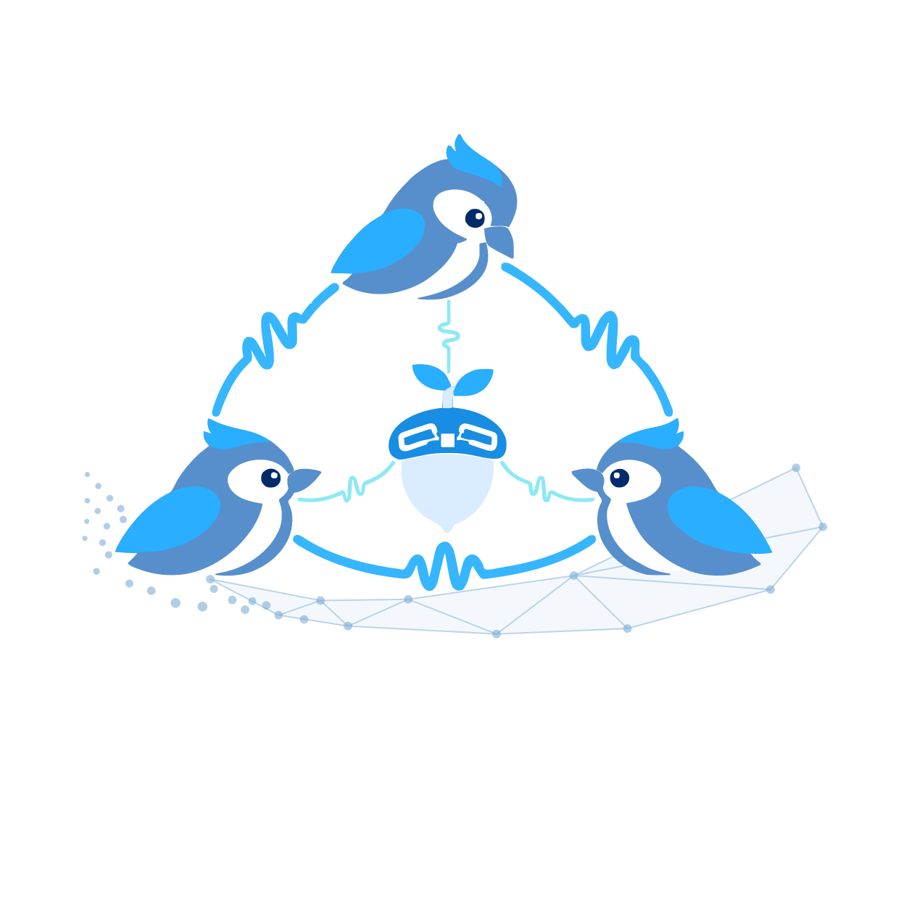
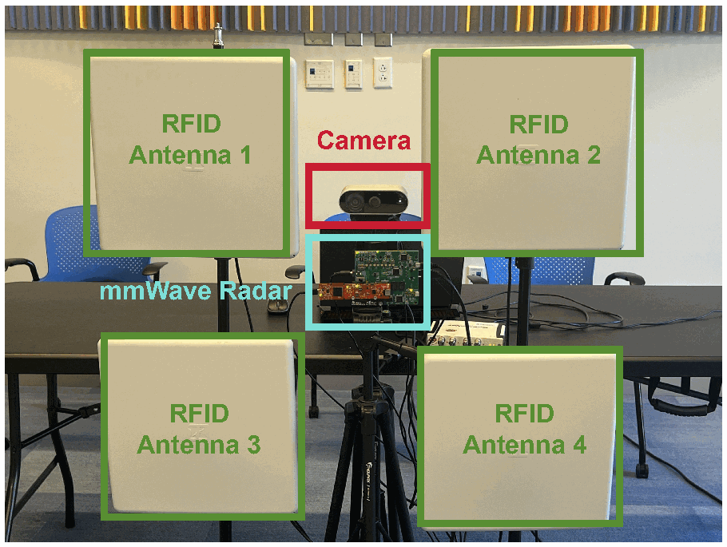

Share RF evidence
96.97%Joint HOI accuracy
Main random sample split
Recognize Human–Object Interaction
with Radio Frequency Signals
Lihao Wang, Linlu Gao, Jiacan Yu
Yanyu Lin, Yifan Yin, Jianxin Wang
Tianmin Shu, Renjie Zhao
Johns Hopkins University

TAKEAWAYLittle tag motion can hide a real human action.
THE TWO SYSTEM CHALLENGES
CHALLENGE 1 — DIFFERENT REPRESENTATIONS
MOTION CUE — TAG PHASE
CHALLENGE 1 — DIFFERENT CLOCKS
DESIGN — PREPARE FUSION INPUTS
DESIGN — SHARED EVIDENCE, SEPARATE OUTPUTS
TAKEAWAYShare the evidence; keep action and target outputs separate.
CHALLENGE 1 — PAIR-CLASS EXPLOSION
CHALLENGE 2 — REAL-WORLD COVERAGE
DESIGN — PHYSICS-INSPIRED SYNTHESIS
TAKEAWAYOne physical motion keeps both synthetic modalities consistent.
RADAR SYNTHESIS — RAY TRACING
RFID SYNTHESIS — A DIFFERENT PHYSICAL MODEL
APPROXIMATION — HAND MOTION AS A PROXY
CHALLENGE — THE SIM-TO-REAL GAP
TAKEAWAYSimulate for coverage; fine-tune on real RF.

TI AWR1843AOP
Impinj R420, four antennas
The camera supplies reference video and the vision baseline.
3,615 real samples; 78 setups, 17 HOI categories, 5 users, 3 environments.
Matched training budgets; full real training partition, random sample split.
17% of the 30% real training partition, approximately 5% of the main dataset.
TAKEAWAYNew real pairings can reuse familiar actions and objects.
81.25% joint accuracy; five pairs withheld from real training, covered in synthesis.
5 new objects, 2 actions, 145 tests; the same real fine-tuning uses only the original objects.
One user; body-occluded non-target objects 20–50 cm behind the user.
Radar preprocessing: 22.83–36.52 ms/frame on tested GPUs; capture: 100 ms/frame.
TAKEAWAYIn this case study, joint labels improve goal inference.
Gemini 2.5 Flash; 22 sequences, 30 goals, 8 examples; one volunteer.
TAKEAWAYS
Joint HOI accuracy
Main random sample split
Gain at 17% of the
real training partition
New-object accuracy
Five objects, two actions